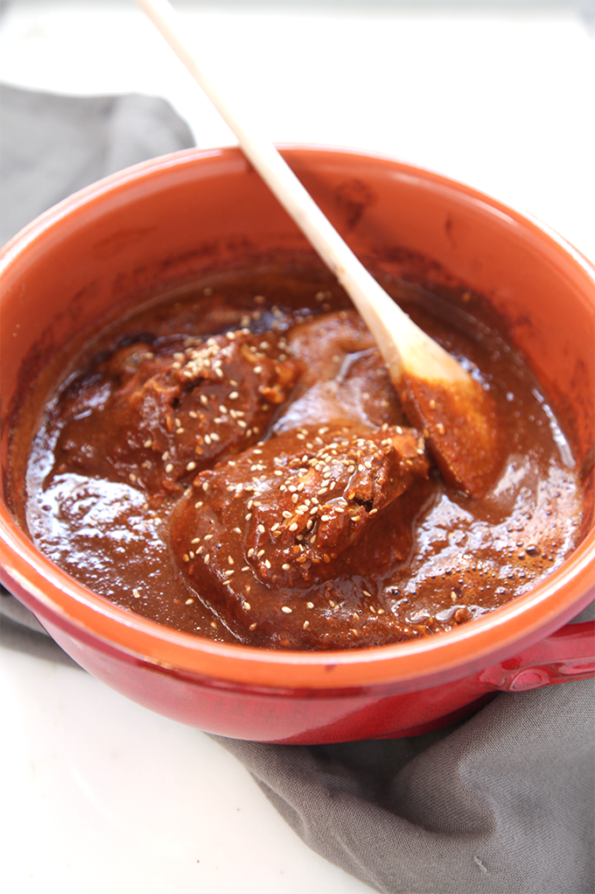

la receta de comidas tradicionales mas popular de este mes:
Mole casero super facil de hacer

mole
Hay muchísimas versiones de moles tradicionales y todas son auténticas,
así es que no hay una forma correcta o incorrecta de prepararlo. Muchas veces he escuchado a personas
decir que les toma días prepararlo, literal, a veces las recetas para hacer mole suenan demasiado complicadas.
ingredientes
cantidad
Chocolate abuelita
1
Chiles guajillos secos
1
Chiles anchos secos
1
Cacahuates
1
Cebolla
1
Ajo
1
Tortillas
1
Caldo de pollo
1
Orégano
1
Sal y pimienta
1
algunos ingredientes pueden ser en menor o mayor cantidad segun lo que el usuario desea en su sabor.
Preparación:
Primero preparo los chiles secos, tienes que quitarles las venas y las semillas, después ponerlos en agua hirviendo hasta que se suavicen.
Cuando estén listos transfiérelos a la licuadora junto con la cebolla, ajos, cacahuates, tortillas y el caldo de pollo.
Licúa muy bien y cuela la mezcla.
Transfiérela a un sartén pre calentado a fuego medio, agrega la tableta de chocolate, sazona con sal, pimienta y orégano.
deja la mezcla hervir a fuego lento hasta que cambien de color. Déjala tapada por 10 minutos aproximadamente.